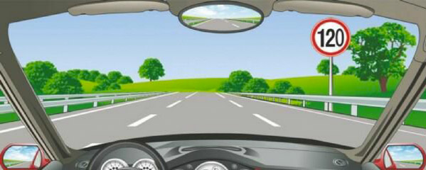
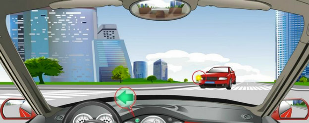
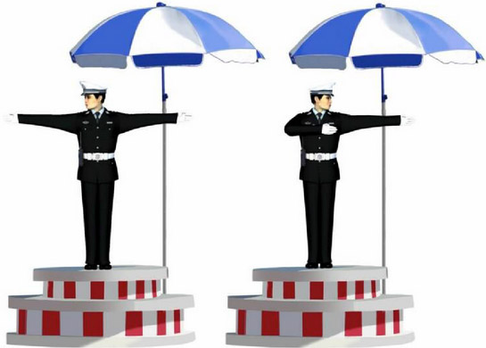
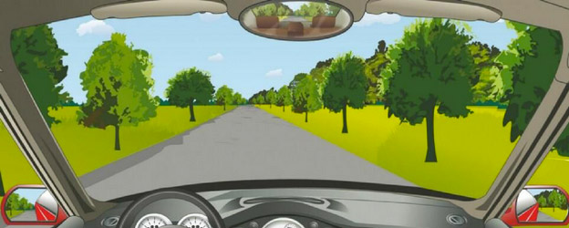
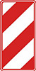
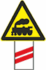
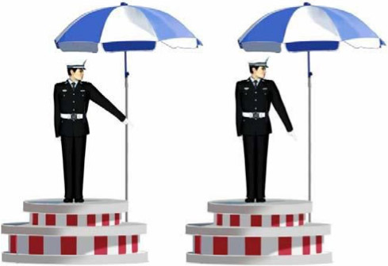

1. When driving, the driver should be courteous and defensive, instead of being offensive.
-
Yes
The test-writers mean "aggressive." Chinese drivers are incredibly aggressive, but not particularly offensive. Despite a highly competitive traffic culture, you don't see many people react angrily here even when someone cuts them off. Road rage is rare.
-
No
2. The driving license of 10-year validity will be issued if the penalty points never reached 12 points in every scoring cycle during the 6-year validity of the license.
-
Yes
The test has many questions about how China's point system works, the details of which I found impossible to remember, so I just guessed.
-
No
3. The main feature of pedestrians participating in road traffic is that _________.
-
A. They move slowly.
-
B. They like to get together and look on.
-
C. They walk around at will and can easily change directions.
Pedestrians can be quite chaotic. When I lived in Beijing in the 1990s, they often crossed the street like schooling fish. Traffic can also be a free-for-all where vehicles show no interest in yielding for pedestrians. Once, when I was in a crosswalk here in Shanghai, a three-wheeled motorized scooter drove over my foot.
-
D. All the above.
On the expressway, the minimum speed is 60 km/hr, the maximum speed is 120 km/hr. If there have 2 lanes in the same direction on the expressway, the speed limit of the right lane is 60~100 km/hr, and the speed limit of the left lane is 100~120 km/hr. If there have 3 lanes in the same direction, the speed limit of the far right lane is 60~90 km/hr, that of the middle lane is 90~110 km/hr, and that of the far left lane is 110~120 km/hr. So overtaking must be from the left side.
4. What is the Minimum speed in this lane?

-
A. 100km/hr
-
B. 110km/hr
-
C. 60km/hr
-
D. 90km/hr
Traffic rules are complex and require a lot of memorization. After passing the test, most drivers seem to forget or ignore them. With the installation of traffic cameras, though, cabbies are especially careful of sticking to the speed limit these days.
Three priviledged passing rights: turning around yields to going straight, coming from right side road goes first, turning right yields to turning left.
5. You have the priviledged passing right of way at the intersection in this situation.

-
A. Yes
A major challenge with this question is the translation. "Privileged passing" means "right of way." Drivers routinely make turns in front of lanes of oncoming traffic. I picked up this habit in Beijing and briefly brought it home to the U.S., where I would drive other motorists crazy for the first few days of a visit.
-
B. No
6. This set of the hand signals of the traffic police indicates that the vehicles should _________.

-
A. go straight
Some police hand signals are intuitive. Some aren't.
-
B. make a turn
-
C. stop
-
D. pull over
7. What is the max speed on this highway?

-
A. 70km/hr
-
B. 50km/hr
-
C. 40km/hr
In order to get this one right, you need to know that this is a rural road — and you need to know that on roads like this, drivers are supposed to go no faster than 40 kilometers an hour.
-
D. 30km/hr
8. Whats the meaning of this sign?

-
A. Passing on both sides
-
B. Passing by the right side
-
C. Passing by the left side
China has a ton of traffic indication signs. To pass the test, you need to know them. I have no idea what the logic is behind this sign.
-
D. Passing is prohibited
9. Whats the meaning of this sign?

-
A. a manned level crossing 50m ahead
-
B. an unmanned level crossing 100m ahead
Each red stripe equals 50 meters. At least that was my deduction. (Also, this question requires that you know the British expression for a railroad crossing.)
-
C. a manned level crossing 100m ahead
-
D. an unmanned level crossing 50m ahead
10. This set of the hand signals of the traffic police indicates that the vehicles should _________.

-
A. turn left
-
B. wait to turn left
I think this answer has to be wrong, but I failed the test three times, so I'm no expert.
-
C. reduce speed and pass slowly
-
D. turn right